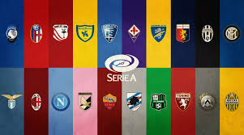

Temukan informasi seputar liga Italia disini.

Serie A (pengucapan bahasa Italia: [ˈsɛːrje ˈa]), juga disebut Serie A TIM karena kesepakatan sponsor dengan Telecom
Italia,[1] adalah liga sepak bola profesional tertinggi di sistem liga sepak bola Italia dan telah berjalan selama
sembilan puluh tahun lebih sejak dibentuk dengan format saat ini pada musim 1929–30. Liga ini dijalankan oleh Lega
Calcio sampai 2010, tetapi organisasi baru, Lega Serie A, dibentuk pada awal musim 2010–11. Serie A sering kali
dianggap sebagai salah satu liga sepak bola terbaik di dunia, dan mencapai puncaknya pada 1990-an sampai pertengahan
2000-an.
Serie A disebut sebagai liga nasional terkuat kedua di dunia pada tahun 2014 menurut IFFHS.[2] Serie A menempati
posisi ketiga di antara liga-liga Eropa menurut Koefisien UEFA, setelah La Liga dan Premier League, di atas Bundesliga
dan Ligue 1. Koefisien ini ditentukan oleh performa klub-klub Italia di Liga Champions dan Liga Europa selama lima
tahun terakhir.[3] Serie A sempat memimpin ranking UEFA antara tahun 1986 hingga 1988 dan antara tahun 1990 hingga
1991.[4]
Serie A telah menghasilkan jumlah finalis Liga Champions UEFA dan pendahulunya, Piala Champions terbanyak: klub Italia
telah mencapai final kompetisi tersebut sebanyak dua puluh enam kali, dan dua belas kali memenanginya.[5]
Dalam format saat ini, Kejuaraan Sepak Bola Italia diubah dari bentuk regional dan antarregional menjadi sebuah liga
yang bersatu sejak musim 1929–30. Gelar juara liga yang dimenangi sebelum 1929 diakui secara resmi oleh FIGC. Musim
1945–46, di mana liga dimainkan dalam format dua wilayah karena Perang Dunia Kedua, sering kali tidak dimasukkan dalam
statistik, meskipun diakui secara resmi.[6]
Liga ini mempunyai tiga klub paling populer di dunia, di mana Juventus, Milan dan Internazionale, semuanya merupakan
anggota pendiri G-14, sebuah grup yang mewakili klub-klub elit dan prestisius Eropa. Serie A adalah satu-satunya liga
yang mengirim tiga wakil pendiri.[7] Lebih banyak pemain yang memenangi Ballon d'Or ketika bermain di Serie A dari
liga sepak bola lain di dunia.[8] Milan adalah salah satu dari dua klub dengan gelar internasional terbanyak di
dunia.[9] Juventus, klub Italia paling sukses sepanjang abad ke-20,[10] dan tim Italia paling sukses sepanjang
masa,[11] berada di posisi keempat Eropa dan kedelapan di dunia.[12] Juventus adalah satu-satunya klub di dunia yang
telah memenangi semua gela resmi kompetisi UEFA yang mungkin diraih dan gelar juara dunia.[13][14][15] Internazionale,
disusul kesuksesan mereka pada musim 2009–10, menjadi tim Italia pertama yang meraih treble.[16]